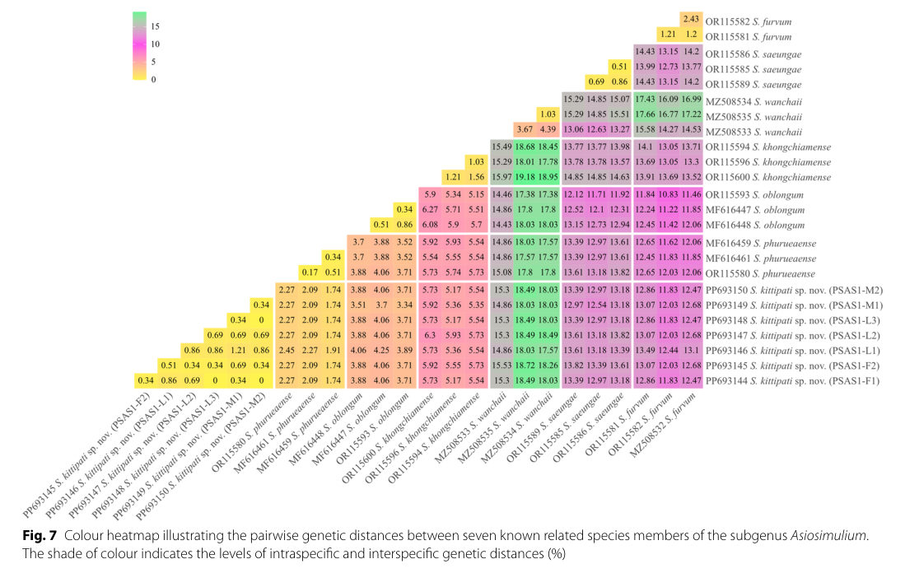

Species › Simulium › Asiosimulium
Simulium saeungae
| Classification | Genus Simulium, subgenus Asiosimulium |
|---|---|
| Status | valid |
| Distribution | Thailand (Takaoka et al. 2019) | Thailand (Srisuka et al. 2024) |
| Thailand | Thailand (Takaoka et al. 2019, p. 54) | Thailand (Srisuka et al. 2024, p. 2, Fig. 1) |
| Diagnostic notes | Subgenus Asiosimulium (Takaoka et al. 2019). Described in Takaoka et al. (2018i). | Subgenus Asiosimulium (COI Clade II). Female: cercus <2x basal width, abdominal segment 5 dull dorsally, spermatheca globular. Male: hind basitarsus 0.90-1.00x hind tibia, abdominal segments 5-8 with shiny dorsolateral patches, segments 3-4 without shiny patches. Pupa: head integument without tubercles, gill with 42-46 filaments in key (42-56 in Discussion p. 14), basal fenestra normal/small. Larva: postgenal cleft without pigmented sheath of subesophageal ganglion, labral fan 30-33 primary rays (Srisuka et al. 2024, pp. 14-16). |
| Sources | Takaoka et al. 2019, Srisuka et al. 2024 |
⚠ Conflicting characters
| Character | Source A | Source B | Type | Comment |
|---|---|---|---|---|
| Pupal gill filament count in key vs discussion | Srisuka et al. 2024: Pupal key couplet 2b (p. 16): 'Gill with 42-46 filaments' | Srisuka et al. 2024: Discussion (p. 14): '42-56 in S. saeungae' | overlapping values | Key lead kept as printed (42-46) with note referencing the Discussion figure (42-56). |
How it keys out
The chain of characters leading to this taxon in each key (a ready-made diagnosis).
Thailand: Simulium (Asiosimulium) females (Takaoka et al. 2019) – couplet 3a
Thailand: Simulium (Asiosimulium) males (Takaoka et al. 2019) – couplet 3a
Thailand: Simulium (Asiosimulium) pupae (Takaoka et al. 2019) – couplet 1a
- 1a Head and thoracic integument bare
Thailand: Simulium (Asiosimulium) mature larvae (Takaoka et al. 2019) – couplet 3a
Subgenus Asiosimulium: adult females (Srisuka et al. 2024) – couplet 6a
Subgenus Asiosimulium: adult males (Srisuka et al. 2024) – couplet 6b
Subgenus Asiosimulium: pupae (Srisuka et al. 2024) – couplet 2b
Subgenus Asiosimulium: mature larvae (Srisuka et al. 2024) – couplet 6a
Figures


